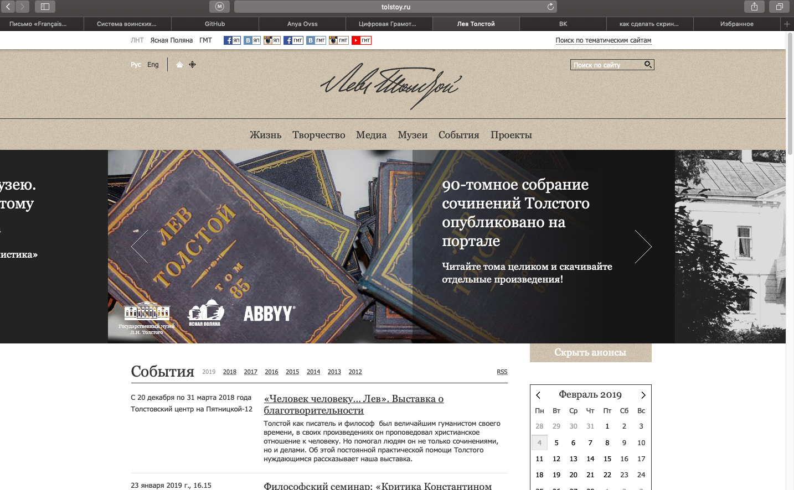

В современном мире филолог - это не только про буквы и книжки. Мы должны идти в ногу со временем и успевать за стремительно развивающимися технологиями. Например, для нас создали множество различных программ и ресурсов, помогающих искать и систематезировать огромный поток информации :) Это очень облегчает жизнь и помогает в работе.
В целом сайт оставил приятное впечатление. Лаконичный дизайн, никаких лишних деталей. Легко найти информацию по интересущим разделам: жизнь, творчество, медиа, музеи, события. Все сделано четко и предельно понятно для любого пользователя. Из недостатков могу отметить только отсутствие специальной версии для пользователей, которые заходят на сайт с мобильного устройства. Приходится приближать, т.к. многие иконки очень мелкие. Ну и еще было бы неплохо поработать со шрифтами.
